在公司实习需要使用mac电脑来进行工作，其中bash是非常重要的工具，本文也是对bash进行了美化，提升使用的效率。
本文采用的方案是利用ITerm2 与 oh-my-zsh来进行美化,同时也要将其配置在vscode中。
在配置的过程中，发现如果路径层级过长，主机名的信息较长，会导致代码容易换行，影响观看。所以选了隐藏路径以及主机名，仅保留当前文件名，效果如图所示：
1. Iterm2安装及其陪配置
手动安装: 打开Iterm2 的官方网址，下载相应的Iterm2 安装包，并安装。
Homebrew安装: 为了方便后期管理，采用homebrew进行安装。
1 | # use brew to install iterm2 |
设置iTerm2为默认的终端
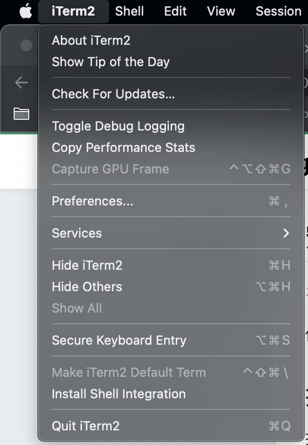
设置iTerm2的字体为 Meslo LG L DZ for powerline，之后vscode的terminal字体也设置为Meslo LG L DZ for powerline。
2. oh-my-zsh
首先，在进入oh-my-zsh之前，要先了解zsh。
zsh又称为z-shell，是一款可用作交互式登录的shell及脚本编写的命令解释器。Zsh对Bourne shell做出了大量改进，同时加入了Bash、ksh及tcsh的某些功能。自2019年起，macOS的默认Shell已从Bash改为Zsh。
zsh 有如下几个特点：
- 可帮助用户键入常用命令选项及参数的可编程命令行补全功能，自带对数百条命令的支持
- 可与任意Shell共享命令历史
- 多种兼容模式（例如，Zsh可在运行为/bin/sh的情况下伪装成Bourne shell）
- 自带where命令，其与which命令类似，但是显示指定于$PATH中所指定指令的全部位置，而不是仅显示所使用指令的位置。
其中，用户社区网站”Oh My Zsh”收集Z shell的第三方插件及主题。
本文也是利用oh-my-zsh来美化oh-my-zsh，利用如下指令进行安装，
1 | # curl 安装 |
安装界面如下：
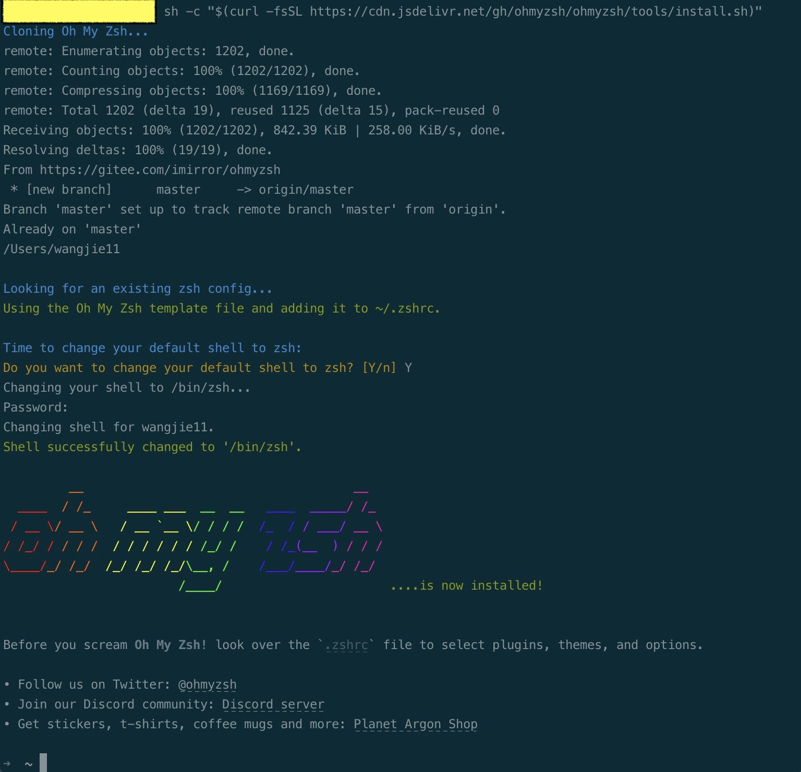
3. 主题配置
oh-my-zsh主题很多，其中 agnoster 是比较常用的主题，本文也是打算使用该主题（更多的主题可以查看theme主题。
3.1 ZSH_THEME配置
打开 ~/.zshrc,修改ZSH-THEME这一配置.
zshrc file is where you’d place customizations to the z shell.
1 | ZSH_THEME ="agnoster |
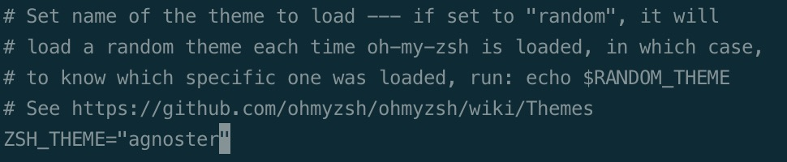
3.2 字体安装与配置
注意agnoster需要安装额外的字体Meslo for Powerline, 下载安装相应的ttf文件。
配置完字体之后，打开iTerm -> Preferences -> Profiles -> Text -> Change Font，选择Meslo LG S Regular for Powerline。
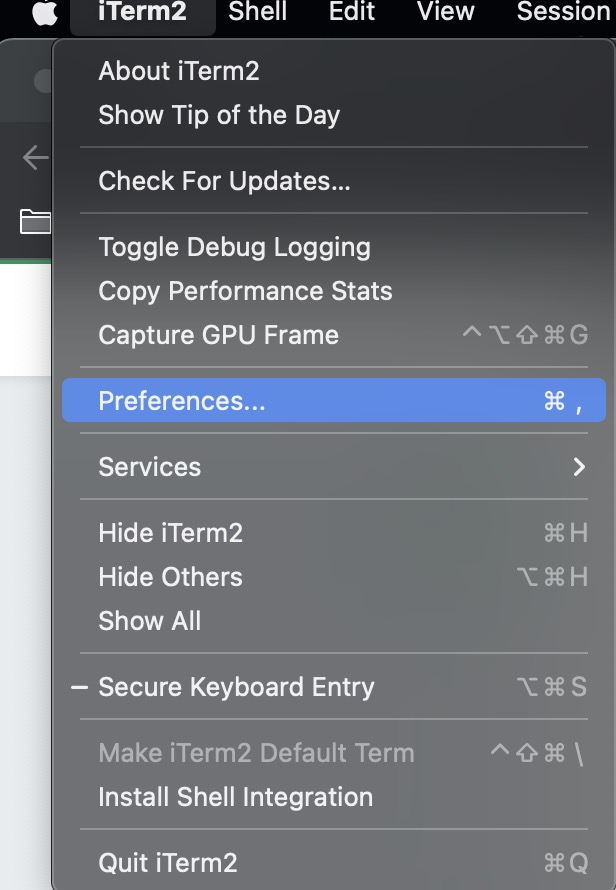
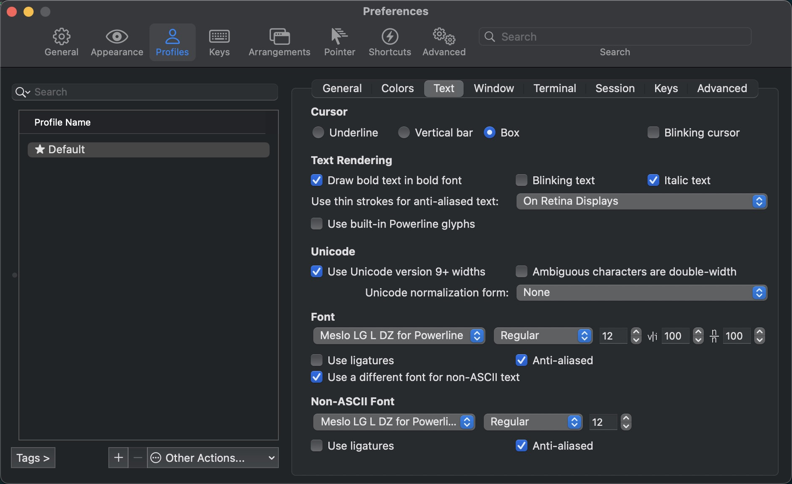
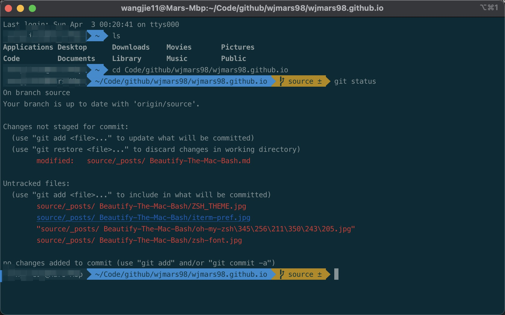
4. 优化zsh
在3.2 中，看到安装oh-my-zsh后的效果。但是存在一定的不足，比如命令行开头都有主机名，文件路径，能够看到当层级增多的时候，会显得非常的长，影响输入，需要一定的优化。笔者选择的方式，是隐去主机名和层级路径，仅保留用户名和当前文件路径，当需要查看路径的时候调用指令pwd即可。
4.1 隐藏主机名
根据3.1可知，zsh的配置信息主要在~/.zshrc这个文件，在该文件底部增加下添加
1 | # * 方法一：隐藏主机和用户名-是笔者选择的方案 |
4.2 隐藏层级路径，保留当前路径
在路径 /Users/username/.oh-my-zsh/themes/agnoster.zsh-theme 下，打开后找到prompt_dir() {}这个函数，然后将prompt_segment blue black ‘%~’ , 最后面的波浪线改为c即可：prompt_segment blue black ‘%c’,。
最后调用指令 source /User/username/.zshrc, 完成刷新，实现了保留用户名以及当前层级用户。
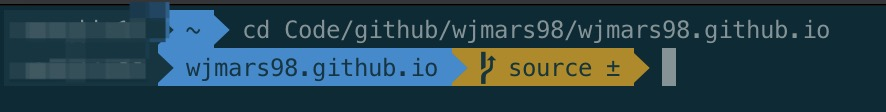
5. 插件
为了进一步提高zsh的效率，笔者添加了部分插件。但是，调用终端的好处在于其快速，便捷，过多的插件反而会使得终端显得臃肿，得不偿失，我们故仅添加必要的插件。
首先安装oh-my-zsh，打开~/.zshrc文件找到plugins=( git )，这里是我们已经启用了那些插件.如果想要启用某个插件，装好之后直接修改
plugins = (插件A 插件B 插件C)
zsh-autosuggestions
非常好用的一个插件，会记录你之前输入过的所有命令，并且自动匹配你可能想要输入命令，然后按→补全zsh-syntax-highlighting
这个插件直接在输入过程中就会提示你，当前命令是否正确，错误红色，正确绿色
6. vscode 配置
在vscode中有可能会出现乱码的情况，这是因为终端的字体没有设置好。在设置搜索中，打开setting.json文件，加入
1 | "terminal.integrated.defaultProfile.osx": "zsh", |
7. 拓展
7.1 不同环境的profile切换
在开发过程，我们会经常掉用到ssh，连接服务器进行开发，此时会产生如下需求：
希望在不同的环境，自动切换对应的profile。
比如，我们在local的时候能够使用local profile， 在ssh连接 服务器时，能切换到开发profile。
7.1.1 构建profiles
根据我们需求，构建指定profile。
例如笔者在开发过程中，会存在本地，与开发环境两种环境，所以构造了三种不同的profile（Mars_Default, Mars_Server, Mars_other）,其中profile命名可以自行定义。
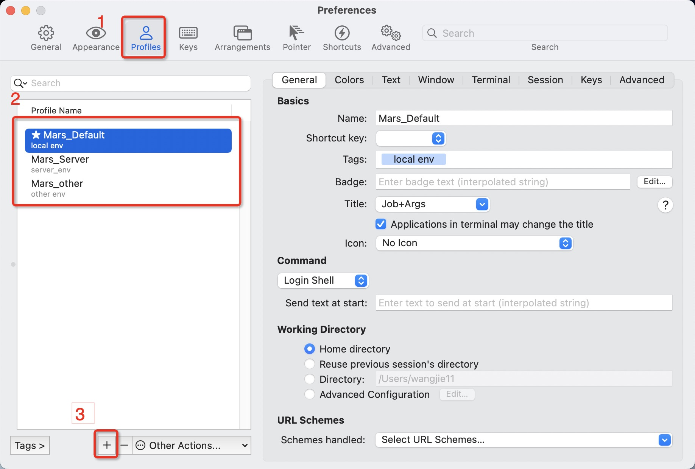
7.1.2 修改域名映射
实现不同环境自动切换profile的原理，为识别server名中指定部分，触发profile的切换。所以我们需要修改本地的域名映射, 添加上前缀即可。
1 | vi /etc/hosts |
7.1.3 创建custom shell 脚本
进入路径, 创建iTrem2-ssh.zsh，其中有样例example.zsh可做参考。
1 | cd ~/.oh-my-zsh/custom |
往iTrem2-ssh.zsh文件写入脚本，注意其中Mars_Default, Mars_Server, Mars_other 需要根据自身需求进行替换。
1 | ## reference: https://gist.github.com/erangaeb/78614828234323f57b328b61a588209e#file-itrem2-ssh-zsh |
7.1.4 效果
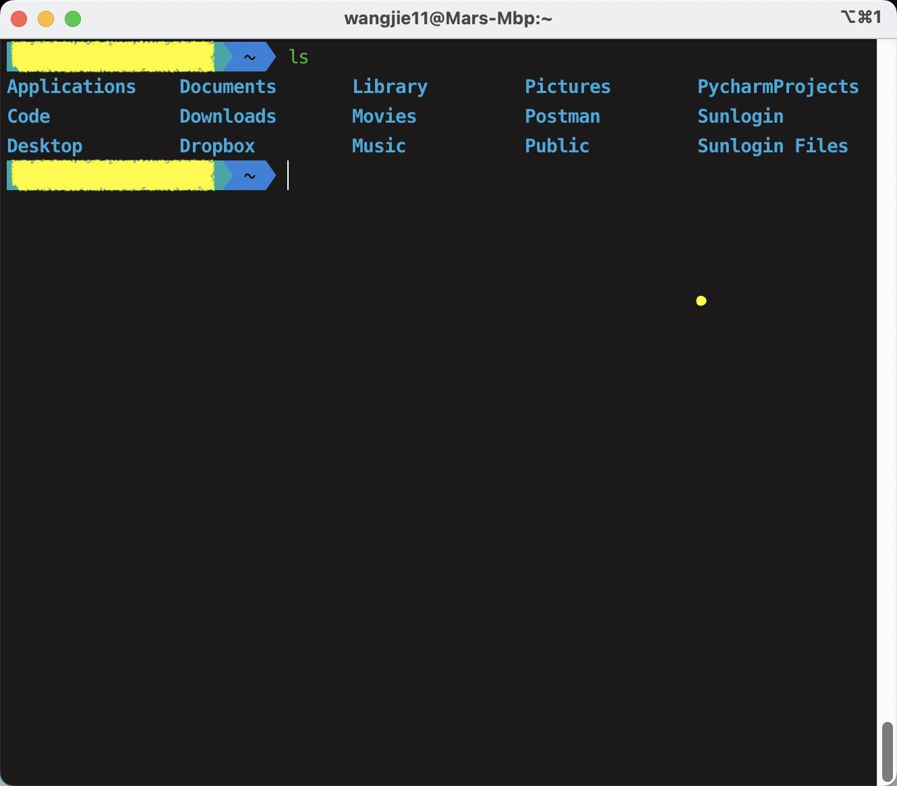
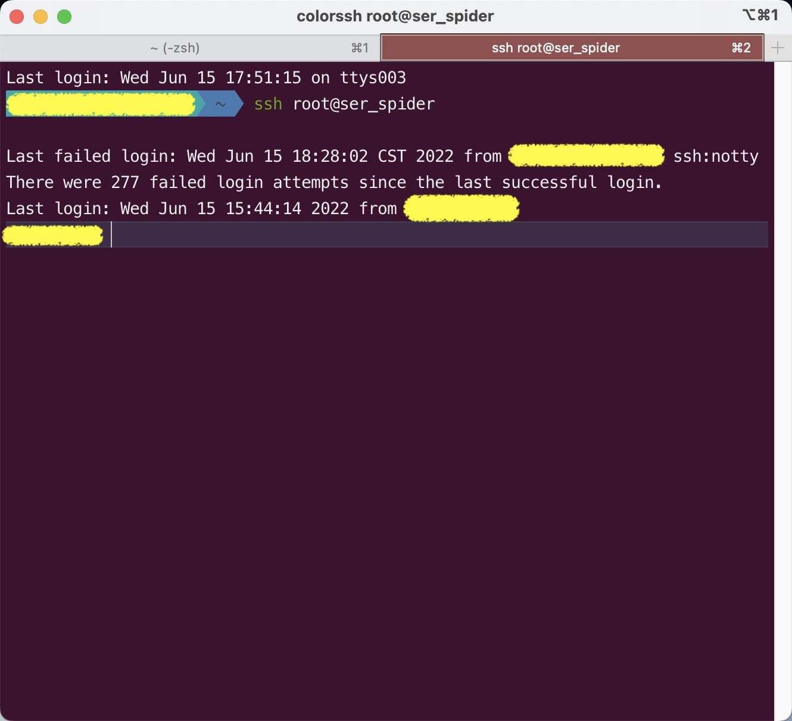
自定义oh-my-zsh 颜色
自定义提示项颜色
在使用iterm2的过程，出现了如下的问题。
在pycharm， vscode中集成了zsh, 由于iterm2默认背景为黑色，而pycharm，vscode背景颜色为白色，导致提示项（标签以及hostname）的颜色不协调。
- 原iterm2颜色
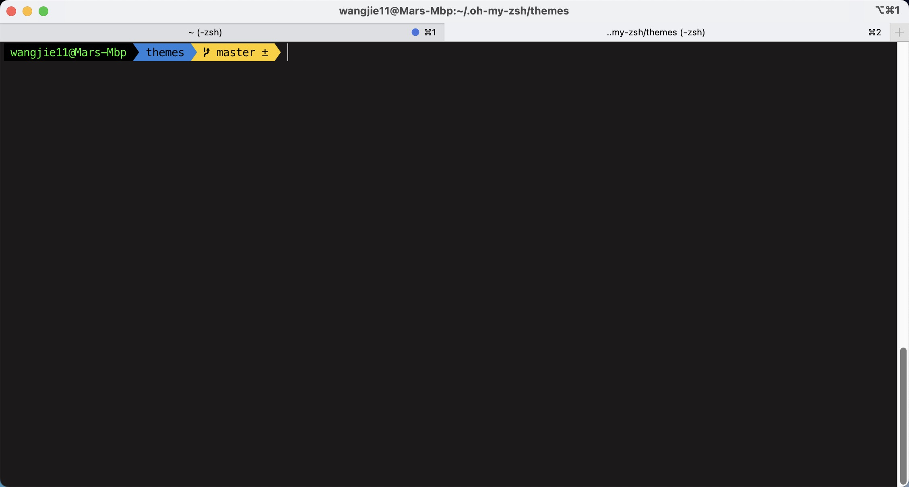
- 原pycharm终端颜色
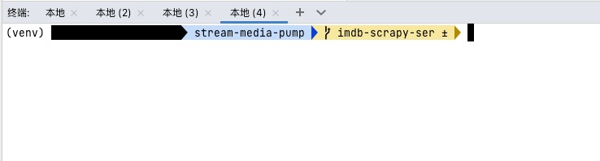
- 原vscode终端颜色
希望能够对提示项的颜色自定义。
修改 ~/.oh-my-zsh/themes/agnoster.zsh-theme 文件（该文件取决与主题选择）中prompt_context() ，将原black修改为自定颜色代码(Xterm Number，Xterm Name皆可name注意大小写)，参考256 Colors Cheat Sheet.
1 | the theme file depend on your customer theme |
修改完成后，调用source ~/.zshrc激活设置。
笔者选用cyan，效果如下：
- iterm2 终端效果
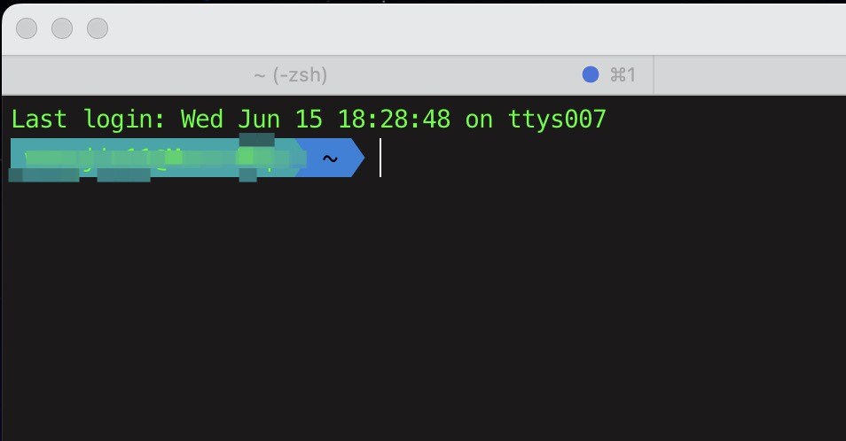
- vscode 效果
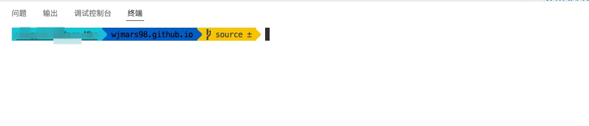
自定义hostname颜色
虽然完成了提示项颜色的自定义，但是发现在终端中cyan背景和绿色字体显示效果不佳，希望能将hotsname修改为黑色。修改hostname与修改提示项颜色类似，在原prompt_context()，中%n@%m代表用户名与主机名，在该项前添加颜色项%F{custom_color}即可，笔者最终代码如下：
1 | the theme file depend on your customer theme |
修改完成后，调用source ~/.zshrc激活设置,最终iterm效果如下：
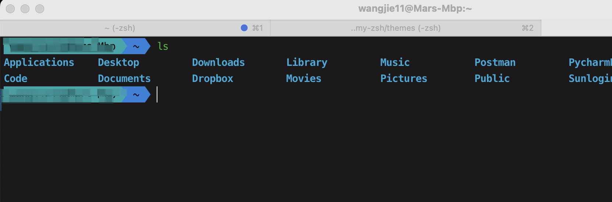
参考文档：
2. mac之 iTerm2 + Oh My Zsh 终端安装教程
5. Bash shell / Zsh 里修改前缀 (隐藏用户@主机，添加Git分支名称)